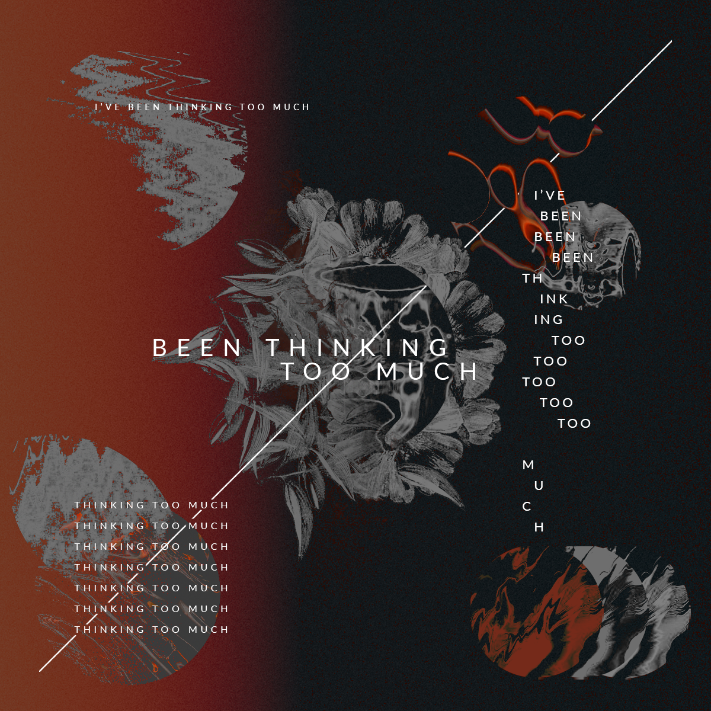
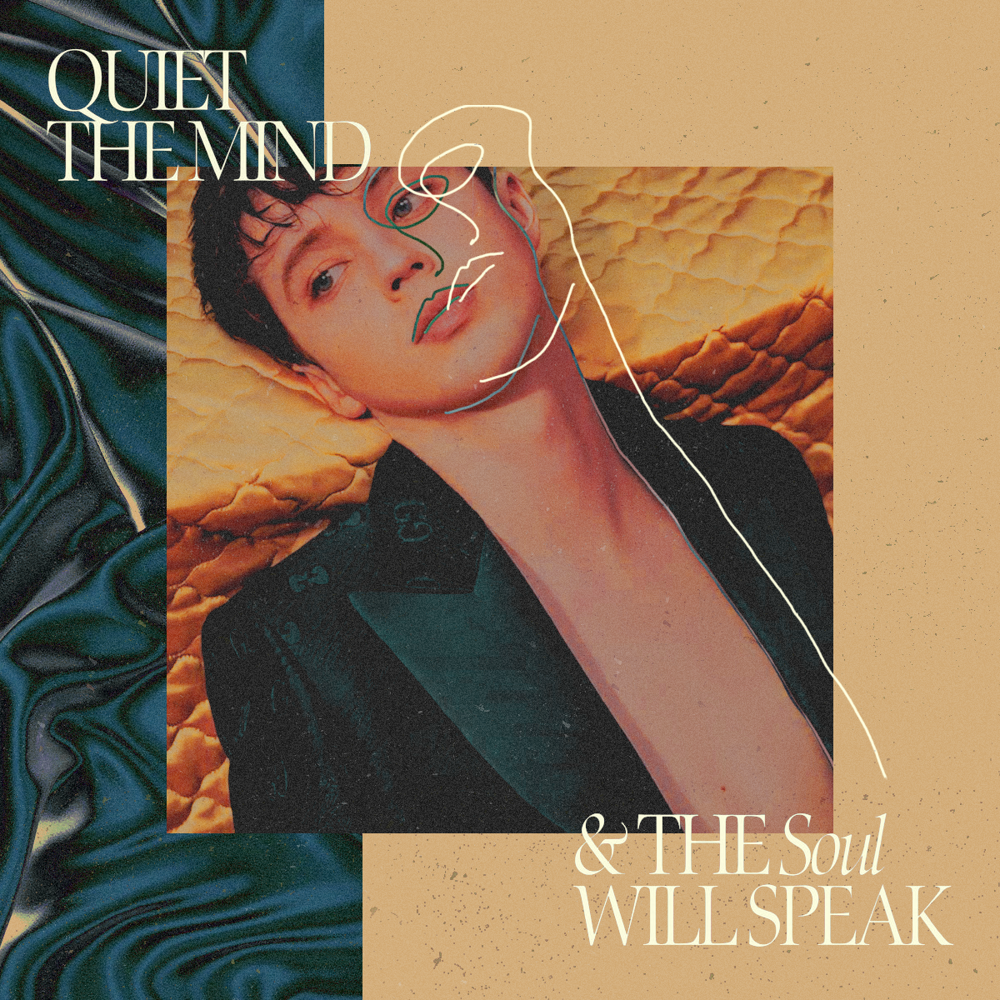
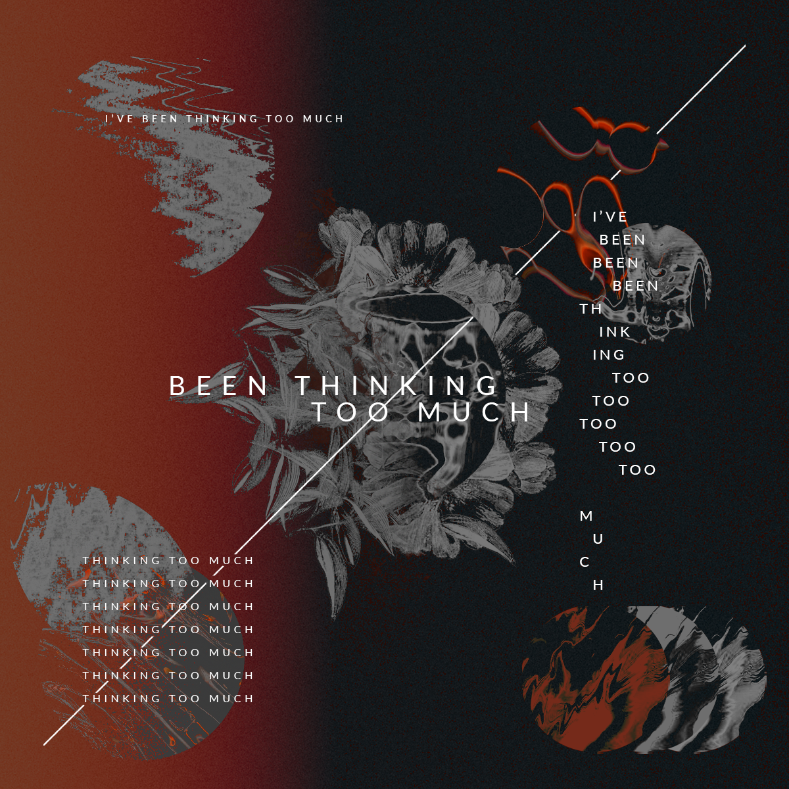
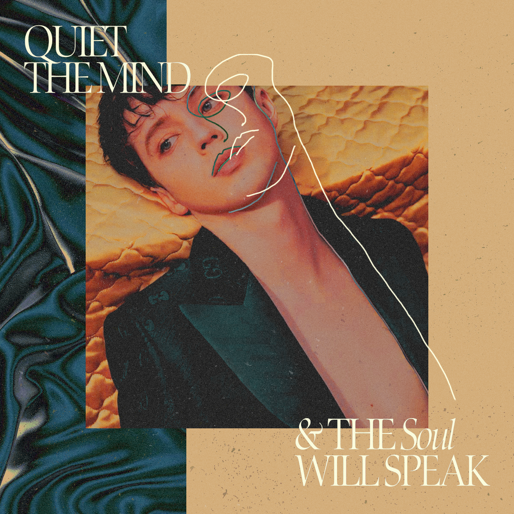

Portfolio graphique
posters
posters pour des univers littéraires
La majorité des posters ci-dessous ont été réalisés pour divers projets littéraires collaboratifs. L'univers de ces projets sont divers et variés, et les posters sont réalisés afin de correspondre un maximum.posters divers
 


